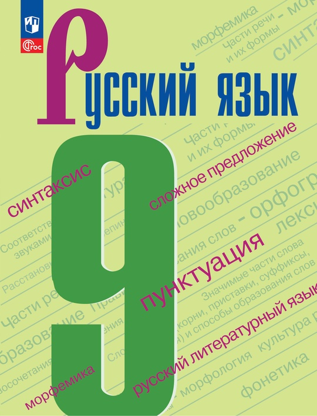
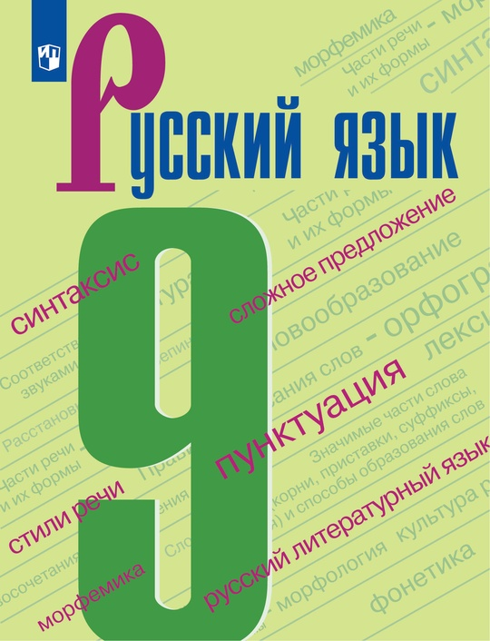
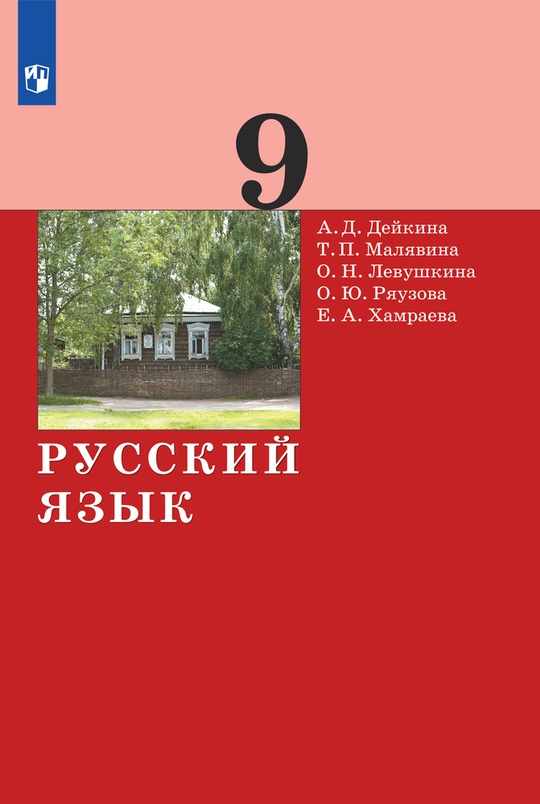
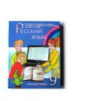
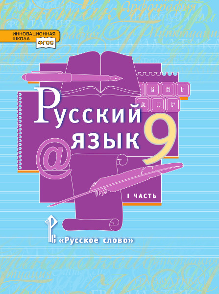

Школьная программа и экзамен
Учебники и задания ОГЭ‑2027
Выберите учебник, который есть у вас в школе. Внутри каждой страницы собраны сведения об авторах и издании, оглавление, ориентировочное соответствие параграфов заданиям 2–12 и ссылки на первоисточники.
Про точность. Общероссийской официальной статистики «самого распространённого» учебника нет, поэтому ниже собраны несколько характерных линий учебников 9 класса, которые встречаются в каталогах и открытых оглавлениях. Принадлежность учебника к федеральному перечню и год издания сверяйте по титульному листу вашего экземпляра и по федеральному перечню учебников. Соответствие параграфов заданиям ОГЭ носит ориентировочный характер: нумерация зависит от издания.
Выберите учебник

Тростенцова и др.
Синтаксис сложного предложения, знаки препинания, повторение
Открыть разбор →

Бархударов и др.
§§ 2–21: от фонетики до сложных предложений и стилей речи
Открыть разбор →

Разумовская и др.
§§ 1–35: сложные предложения, текст, стили и жанры
Открыть разбор →

Дейкина и др.
§§ 1–54: синтаксис, пунктуация, практикумы и повторение
Открыть разбор →

Панов и др.
«Синтаксис», «Язык и речь», «Язык художественной литературы»
Открыть разбор →

Быстрова и др.
Инновационная школа, 3-е издание, 2022; синтаксис и пунктуация
Открыть разбор →
Как пользоваться страницей учебника
- Найдите свой учебник по фамилии автора или по издательству.
- Откройте страницу учебника и сверьте год издания с титульным листом.
- В таблице соответствий найдите темы, которые нужны для конкретного задания 2–12.
- Перейдите по ссылке на задание, чтобы увидеть формулировку и алгоритм выполнения.
- Если вашего учебника нет в списке, пользуйтесь универсальным справочником по теории — он не привязан к нумерации параграфов.
Что именно понадобится из учебника
| Задания | Раздел школьного курса | Главное для экзамена |
|---|---|---|
| 2, 3, 9 | Синтаксис | Грамматическая основа, типы предложений, виды подчинительной связи. |
| 4, 5 | Пунктуация | Знаки в простом и сложном предложении, знаки при обособленных и вводных конструкциях. |
| 6, 7 | Орфография | Корни, приставки, суффиксы, написание Н/НН, Ь после шипящих, НЕ и дефис. |
| 8 | Культура речи | Грамматические нормы, формы слова, ударение, согласование и управление. |
| 10–12 | Текст и стилистика | Содержание текста, тропы, фразеологизмы, изобразительные средства. |
Источники сведений об учебниках
- Федеральный перечень учебников — официальный список допущенных учебников.
- Каталог «Просвещения» — описания линий Разумовской и других авторов.
- Каталог «Русского слова» — описания учебников Быстровой и Панова.
- Институт русского языка им. В. В. Виноградова РАН — библиографическая справка об учебнике под ред. М. В. Панова.
- Мой-учебник.ru — открытые оглавления и страницы учебников.
- Официальные документы ФИПИ 2027 года — см. страницу «Обзор».
- Обложки учебников взяты из каталогов издательств «Просвещение» и «Русское слово» и с сайта Института русского языка им. В. В. Виноградова РАН; они нужны только для визуального сличения с вашим экземпляром.
Поиск сведений продолжается: если вы знаете точное оглавление своего учебника, можно дополнить соответствующую страницу через режим редактирования.